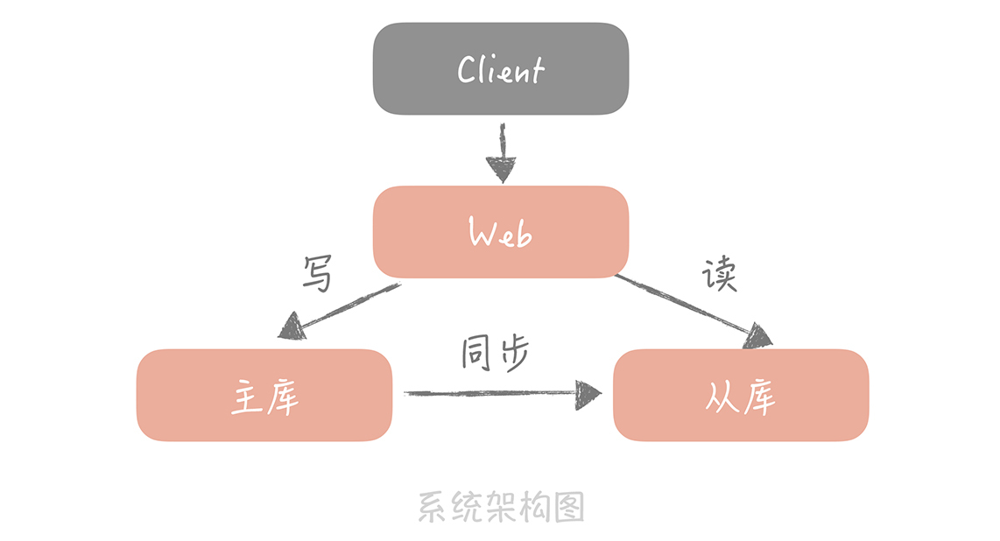
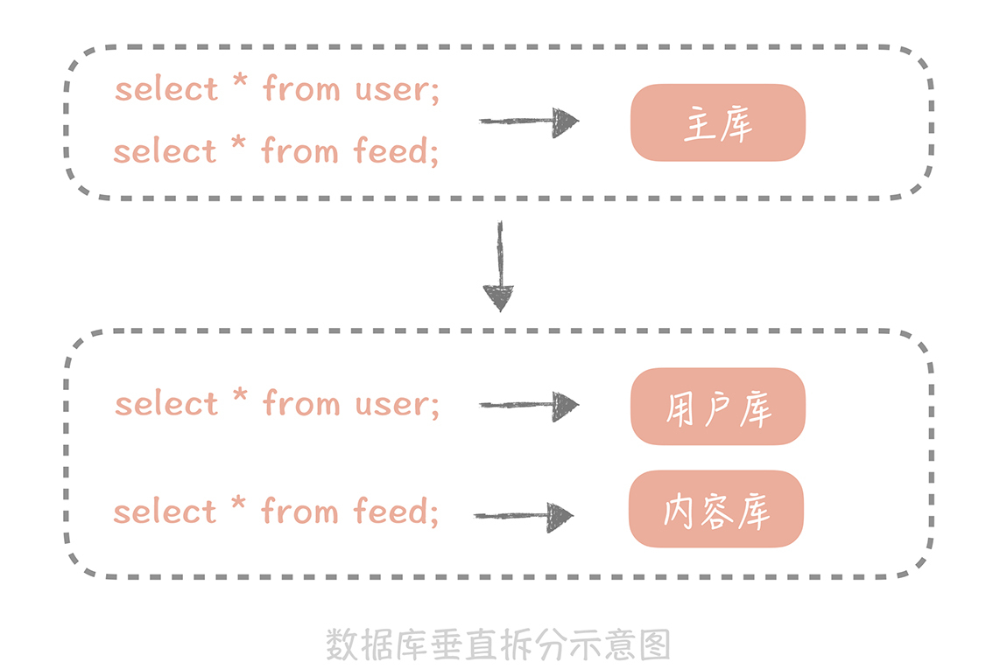
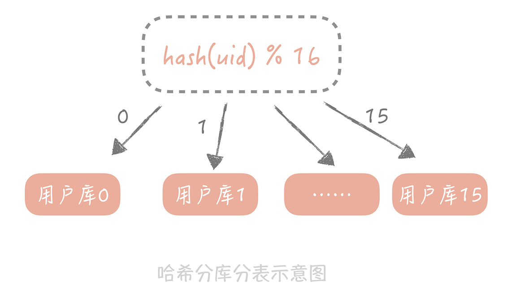
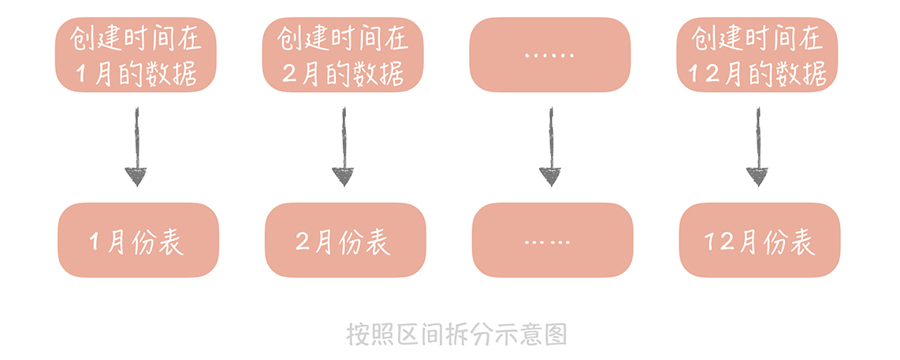

- 00 开篇词 为什么你要学习高并发系统设计？.md.html
- 01 高并发系统：它的通用设计方法是什么？.md.html
- 02 架构分层：我们为什么一定要这么做？.md.html
- 03 系统设计目标（一）：如何提升系统性能？.md.html
- 04 系统设计目标（二）：系统怎样做到高可用？.md.html
- 05 系统设计目标（三）：如何让系统易于扩展？.md.html
- 06 面试现场第一期：当问到组件实现原理时，面试官是在刁难你吗？.md.html
- 07 池化技术：如何减少频繁创建数据库连接的性能损耗？.md.html
- 08 数据库优化方案（一）：查询请求增加时，如何做主从分离？.md.html
- 09 数据库优化方案（二）：写入数据量增加时，如何实现分库分表？.md.html
- 10 发号器：如何保证分库分表后ID的全局唯一性？.md.html
- 11 NoSQL：在高并发场景下，数据库和NoSQL如何做到互补？.md.html
- 12 缓存：数据库成为瓶颈后，动态数据的查询要如何加速？.md.html
- 13 缓存的使用姿势（一）：如何选择缓存的读写策略？.md.html
- 14 缓存的使用姿势（二）：缓存如何做到高可用？.md.html
- 15 缓存的使用姿势（三）：缓存穿透了怎么办？.md.html
- 16 CDN：静态资源如何加速？.md.html
- 17 消息队列：秒杀时如何处理每秒上万次的下单请求？.md.html
- 18 消息投递：如何保证消息仅仅被消费一次？.md.html
- 19 消息队列：如何降低消息队列系统中消息的延迟？.md.html
- 20 面试现场第二期：当问到项目经历时，面试官究竟想要了解什么？.md.html
- 21 系统架构：每秒1万次请求的系统要做服务化拆分吗？.md.html
- 22 微服务架构：微服务化后，系统架构要如何改造？.md.html
- 23 RPC框架：10万QPS下如何实现毫秒级的服务调用？.md.html
- 24 注册中心：分布式系统如何寻址？.md.html
- 25 分布式Trace：横跨几十个分布式组件的慢请求要如何排查？.md.html
- 26 负载均衡：怎样提升系统的横向扩展能力？.md.html
- 27 API网关：系统的门面要如何做呢？.md.html
- 28 多机房部署：跨地域的分布式系统如何做？.md.html
- 29 Service Mesh：如何屏蔽服务化系统的服务治理细节？.md.html
- 30 给系统加上眼睛：服务端监控要怎么做？.md.html
- 31 应用性能管理：用户的使用体验应该如何监控？.md.html
- 32 压力测试：怎样设计全链路压力测试平台？.md.html
- 33 配置管理：成千上万的配置项要如何管理？.md.html
- 34 降级熔断：如何屏蔽非核心系统故障的影响？.md.html
- 35 流量控制：高并发系统中我们如何操纵流量？.md.html
- 36 面试现场第三期：你要如何准备一场技术面试呢？.md.html
- 37 计数系统设计（一）：面对海量数据的计数器要如何做？.md.html
- 38 计数系统设计（二）：50万QPS下如何设计未读数系统？.md.html
- 39 信息流设计（一）：通用信息流系统的推模式要如何做？.md.html
- 40 信息流设计（二）：通用信息流系统的拉模式要如何做？.md.html
- 加餐 数据的迁移应该如何做？.md.html
- 期中测试 10道高并发系统设计题目自测.md.html
- 用户故事 从“心”出发，我还有无数个可能.md.html
- 结束语 学不可以已.md.html
- 捐赠
09 数据库优化方案（二）：写入数据量增加时，如何实现分库分表？
你好，我是唐扬。
前一节课，我们学习了在高并发下数据库的一种优化方案：读写分离，它就是依靠主从复制的技术使得数据库实现了数据复制为多份，增强了抵抗大量并发读请求的能力，提升了数据库的查询性能的同时，也提升了数据的安全性，当某一个数据库节点，无论是主库还是从库发生故障时，我们还有其他的节点中存储着全量的数据，保证数据不会丢失。此时，你的电商系统的架构图变成了下面这样：

这时，公司 CEO 突然传来一个好消息，运营推广持续带来了流量，你所设计的电商系统的订单量突破了五千万，订单数据都是单表存储的，你的压力倍增，因为无论是数据库的查询还是写入性能都在下降，数据库的磁盘空间也在报警。所以，你主动分析现阶段自己需要考虑的问题，并寻求高效的解决方式，以便系统能正常运转下去。你考虑的问题主要有以下几点：
\1. 系统正在持续不断地的发展，注册的用户越来越多，产生的订单越来越多，数据库中存储的数据也越来越多，单个表的数据量超过了千万甚至到了亿级别。这时即使你使用了索引，索引占用的空间也随着数据量的增长而增大，数据库就无法缓存全量的索引信息，那么就需要从磁盘上读取索引数据，就会影响到查询的性能了。那么这时你要如何提升查询性能呢？
\2. 数据量的增加也占据了磁盘的空间，数据库在备份和恢复的时间变长，你如何让数据库系统支持如此大的数据量呢？
\3. 不同模块的数据，比如用户数据和用户关系数据，全都存储在一个主库中，一旦主库发生故障，所有的模块儿都会受到影响，那么如何做到不同模块的故障隔离呢？
\4. 你已经知道了，在 4 核 8G 的云服务器上对 MySQL5.7 做 Benchmark，大概可以支撑 500TPS 和 10000QPS，你可以看到数据库对于写入性能要弱于数据查询的能力，那么随着系统写入请求量的增长，数据库系统如何来处理更高的并发写入请求呢？
这些问题你可以归纳成，数据库的写入请求量大造成的性能和可用性方面的问题，要解决这些问题，你所采取的措施就是对数据进行分片，对数据进行分片，可以很好地分摊数据库的读写压力，也可以突破单机的存储瓶颈，而常见的一种方式是对数据库做“分库分表”。
分库分表是一个很常见的技术方案，你应该有所了解。那你会说了：“既然这个技术很普遍，而我又有所了解，那你为什么还要提及这个话题呢？”因为以我过往的经验来看，不少人会在“分库分表”这里踩坑，主要体现在：
\1. 对如何使用正确的分库分表方式一知半解，没有明白使用场景和方法。比如，一些同学会在查询时不使用分区键；
\2. 分库分表引入了一些问题后，没有找到合适的解决方案。比如，会在查询时使用大量连表查询等等。
本节课，我就带你解决这两个问题，从常人容易踩坑的地方，跳出来。
如何对数据库做垂直拆分
分库分表是一种常见的将数据分片的方式，它的基本思想是依照某一种策略将数据尽量平均的分配到多个数据库节点或者多个表中。
不同于主从复制时数据是全量地被拷贝到多个节点，分库分表后，每个节点只保存部分的数据，这样可以有效地减少单个数据库节点和单个数据表中存储的数据量，在解决了数据存储瓶颈的同时也能有效的提升数据查询的性能。同时，因为数据被分配到多个数据库节点上，那么数据的写入请求也从请求单一主库变成了请求多个数据分片节点，在一定程度上也会提升并发写入的性能。
比如，我之前做过一个直播项目，在这个项目中，需要存储用户在直播间中发的消息以及直播间中的系统消息，你知道这些消息量极大，有些比较火的直播间有上万条留言是很常见的事儿，日积月累下来就积攒了几亿的数据，查询的性能和存储空间都扛不住了。没办法，就只能加班加点重构，启动多个数据库来分摊写入压力和容量的压力，也需要将原来单库的数据迁移到新启动的数据库节点上，好在最后成功完成分库分表和数据迁移校验工作，不过也着实花费了不少的时间和精力。
数据库分库分表的方式有两种：一种是垂直拆分，另一种是水平拆分。这两种方式，在我看来，掌握拆分方式是关键，理解拆分原理是内核。所以你在学习时，最好可以结合自身业务来思考。
垂直拆分，顾名思义就是对数据库竖着拆分，也就是将数据库的表拆分到多个不同的数据库中。
垂直拆分的原则一般是按照业务类型来拆分，核心思想是专库专用，将业务耦合度比较高的表拆分到单独的库中。举个形象的例子就是在整理衣服的时候，将羽绒服、毛衣、T 恤分别放在不同的格子里。这样可以解决我在开篇提到的第三个问题：把不同的业务的数据分拆到不同的数据库节点上，这样一旦数据库发生故障时只会影响到某一个模块的功能，不会影响到整体功能，从而实现了数据层面的故障隔离。
我还是以微博系统为例来给你说明一下。
在微博系统中有和用户相关的表，有和内容相关的表，有和关系相关的表，这些表都存储在主库中。在拆分后，我们期望用户相关的表分拆到用户库中，内容相关的表分拆到内容库中，关系相关的表分拆到关系库中。

对数据库进行垂直拆分是一种偏常规的方式，这种方式其实你会比较常用，不过拆分之后，虽然可以暂时缓解存储容量的瓶颈，但并不是万事大吉，因为数据库垂直拆分后依然不能解决某一个业务模块的数据大量膨胀的问题，一旦你的系统遭遇某一个业务库的数据量暴增，在这个情况下，你还需要继续寻找可以弥补的方式。
比如微博关系量早已经过了千亿，单一的数据库或者数据表已经远远不能满足存储和查询的需求了，这个时候，你需要将数据拆分到多个数据库和数据表中，也就是对数据库和数据表做水平拆分了。
如何对数据库做水平拆分
和垂直拆分的关注点不同，垂直拆分的关注点在于业务相关性，而水平拆分指的是将单一数据表按照某一种规则拆分到多个数据库和多个数据表中，关注点在数据的特点。
拆分的规则有下面这两种：
\1. 按照某一个字段的哈希值做拆分，这种拆分规则比较适用于实体表，比如说用户表，内容表，我们一般按照这些实体表的 ID 字段来拆分。比如说我们想把用户表拆分成 16 个库，64 张表，那么可以先对用户 ID 做哈希，哈希的目的是将 ID 尽量打散，然后再对 16 取余，这样就得到了分库后的索引值；对 64 取余，就得到了分表后的索引值。

\2. 另一种比较常用的是按照某一个字段的区间来拆分，比较常用的是时间字段。你知道在内容表里面有“创建时间”的字段，而我们也是按照时间来查看一个人发布的内容。我们可能会要看昨天的内容，也可能会看一个月前发布的内容，这时就可以按照创建时间的区间来分库分表，比如说可以把一个月的数据放入一张表中，这样在查询时就可以根据创建时间先定位数据存储在哪个表里面，再按照查询条件来查询。
一般来说，列表数据可以使用这种拆分方式，比如一个人一段时间的订单，一段时间发布的内容。但是这种方式可能会存在明显的热点，这很好理解嘛，你当然会更关注最近我买了什么，发了什么，所以查询的 QPS 也会更多一些，对性能有一定的影响。另外，使用这种拆分规则后，数据表要提前建立好，否则如果时间到了 2020 年元旦，DBA（Database Administrator，数据库管理员）却忘记了建表，那么 2020 年的数据就没有库表可写了，就会发生故障了。

数据库在分库分表之后，数据的访问方式也有了极大的改变，原先只需要根据查询条件到从库中查询数据即可，现在则需要先确认数据在哪一个库表中，再到那个库表中查询数据。这种复杂度也可以通过数据库中间件来解决，我们在上一节中已经有所讲解，这里就不再赘述了，不过，我想再次强调的是你需要对所使用数据库中间件的原理有足够的了解和足够强的运维上的把控能力。
不过，你要知道的是，分库分表虽然能够解决数据库扩展性的问题，但是它也给我们的使用带来了一些问题。
解决分库分表引入的问题
分库分表引入的一个最大的问题就是引入了分库分表键，也叫做分区键，也就是我们对数据库做分库分表所依据的字段。
从分库分表规则中你可以看到，无论是哈希拆分还是区间段的拆分，我们首先都需要选取一个数据库字段，这带来一个问题是：我们之后所有的查询都需要带上这个字段，才能找到数据所在的库和表，否则就只能向所有的数据库和数据表发送查询命令。如果像上面说的要拆分成 16 个库和 64 张表，那么一次数据的查询会变成 16*64=1024 次查询，查询的性能肯定是极差的。
当然，方法总比问题多，针对这个问题，我们也会有一些相应的解决思路。比如，在用户库中我们使用 ID 作为分区键，这时如果需要按照昵称来查询用户时，你可以按照昵称作为分区键再做一次拆分，但是这样会极大的增加存储成本，如果以后我们还需要按照注册时间来查询时要怎么办呢，再做一次拆分吗？
所以最合适的思路是你要建立一个昵称和 ID 的映射表，在查询的时候要先通过昵称查询到 ID，再通过 ID 查询完整的数据，这个表也可以是分库分表的，也需要占用一定的存储空间，但是因为表中只有两个字段，所以相比重新做一次拆分还是会节省不少的空间的。
分库分表引入的另外一个问题是一些数据库的特性在实现时可能变得很困难。比如说多表的 join 在单库时是可以通过一个 SQL 语句完成的，但是拆分到多个数据库之后就无法跨库执行 SQL 了，不过好在我们对于 join 的需求不高，即使有也一般是把两个表的数据取出后在业务代码里面做筛选，复杂是有一些，不过是可以实现的。再比如说在未分库分表之前查询数据总数时只需要在 SQL 中执行 count() 即可，现在数据被分散到多个库表中，我们可能要考虑其他的方案，比方说将计数的数据单独存储在一张表中或者记录在 Redis 里面。
当然，虽然分库分表会对我们使用数据库带来一些不便，但是相比它所带来的扩展性和性能方面的提升，我们还是需要做的，因为，经历过分库分表后的系统，才能够突破单机的容量和请求量的瓶颈，就比如说，我在开篇提到的我们的电商系统，它正是经历了分库分表，才会解决订单表数据量过大带来的性能衰减和容量瓶颈。
© 2019 - 2023 Liangliang Lee. Powered by gin and hexo-theme-book.